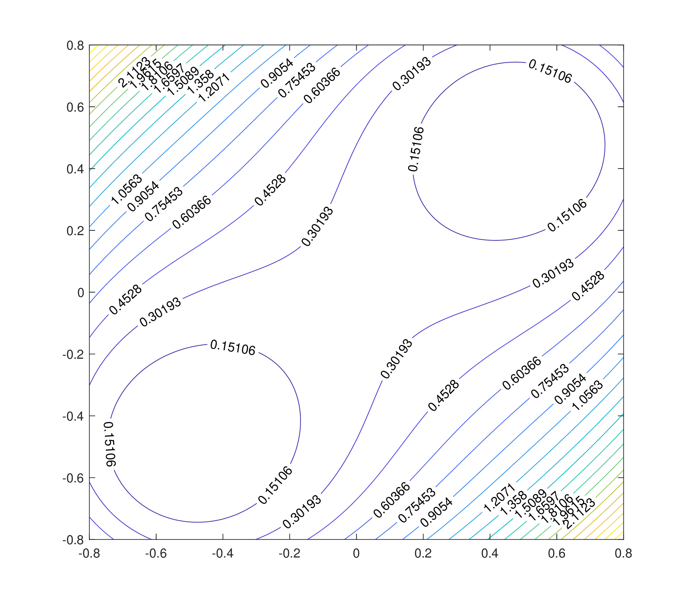
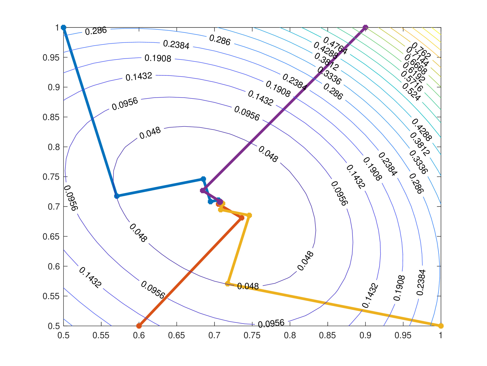

Appendix J — Numerical Solutions of Non-Linear Equations
An important task in numerical analysis is that of finding the root \(x\) of a function \(f:\mathbb{R}\to \mathbb{R}\), i.e. finding the point(s) \(x\in \mathbb{R}\) such that \(f(x)=0\) (equivalently, in higher-dimensions, the root of a function \(\boldsymbol{f}:\mathbb{R}^M \to \mathbb{R}^N\) is a vector/point \(\boldsymbol{x} \in \mathbb{R}^M\) such that \(\boldsymbol{f}(\boldsymbol{x})=\boldsymbol{0}\)). It is important to realise that for many real-life industrial problems (such as the discretisations of domains for partial differential equations), the system be very large, having a system of \(10000\) parameters or even higher is not uncommon.
Throughout this section, the exact roots of non-linear functions will be denoted \(x^{\ast}\) or \(\boldsymbol{x}^{\ast}\). Numerical algorithms for the approximation of \(x^{\ast}\) or \(\boldsymbol{x}^{\ast}\) are usually iterative and the aim is to generate a sequence of values \(x_k\) or \(\boldsymbol{x}_k\) such that \[ \lim_{k\to \infty } x_k = x^\ast \quad \text{or} \quad \lim_{k\to \infty } \boldsymbol{x}_k = \boldsymbol{x}^\ast.\]
J.1 One-Dimensional Root-Finding Algorithm
In general, a non-linear function may have several roots and to find a root, an algorithm would require an initial guess \(x_0\) which guides the solution procedure. Finding such a guess is usually difficult and requires some a priori knowledge.
Any method for solving a problem of the form \(f(x) = 0\) (or indeed \(\boldsymbol{f}(\boldsymbol{x})= \boldsymbol{0}\)) should have the following properties:
- It should be “easy” to use, preferably using only information on \(f\), not on its derivatives;
- It should be fast and be able to find a root to a specified tolerance. More specifically, a sequence \(\{x_k\}_{k \in \mathbb{N}}\) generated by a numerical method is said to converge to \(x^\ast\) with order \(p\) if there exists a constant \(C>0\) such that for a large enough \(k_0 \in \mathbb{N}\), \[\frac{|x_{k+1} - x^{\ast} |}{|x_{k} - x^{\ast} |^p} \leq C \quad \text{for all} \quad k \geq k_0.\]
- It should be reliable, i.e. it should converge to a root close to an initial guess and not diverge or become chaotic. The convergence of iterative methods for root-finding of a non-linear equation depends, in general, on the initial guess \(x_0\). The method is called:
- Locally Convergent if the convergence holds for any starting guess \(x_0\) that belongs to a suitable neighbourhood of the root \(x^\ast\);
- Globally Convergent if the convergence holds for any choice of \(x_0\).
There is no ideal method, so more practical algorithms use a combination of methods to find the roots.
J.2 Bisection Method
For \(k \geq 0\):
- Find an interval \([a_k,b_k]\) over which \(f\) changes sign (i.e. \(f(a_k)<0<f(b_k)\) or \(f(a_k)>0>f(b_k)\)) and set \(c_k=\frac{a_k+b_k}{2}\) and define \(x_{k+1}=c_k\);
- The function \(f\) must change sign over one of the two intervals \([a_k,c_k]\) or \([c_k,b_k]\);
- If \(f\) changes sign in the interval \([a_k,c_k]\), then let \(a_{k+1}=a_k\) and \(b_{k+1}=c_{k}\);
- If \(f\) changes sign in the interval \([c_k,b_k]\), then let \(a_{k+1}=c_k\) and \(b_{k+1}=b_{k}\);
- Update \(k \to k+1\) and repeat steps 1-3 until \(|b_{k}-a_{k}|<\tau\) for some tolerance \(\tau\);
- The sequence of values \(\left\{ x_k \right\}\) will converge to the exact root \(x^{\ast}.\)
Advantages of the Bisection method:
- No information about the derivative of \(f\) is needed.
- For the right choices of \(a\) and \(b\), convergence is guaranteed, making it very reliable.
- The more iterations there are, the more accurate the solution will be (not susceptible to numerical errors).
- Iterations are easy to do since they require finding the average only.
Disadvantages of the Bisection method:
- The convergence is very slow, linear at best. This means that if \(x_k\) is an estimate for the exact root \(x^{\ast}\) of \(f\) and \(e_k=x^{\ast}-x_k\) is the error, then if \(e_k\) is small, the error at the next iteration will be \(|e_{k+1} | \approx K |e_k|\) where \(K \in (0,1)\) is a constant (usually for the bisection method \(K=0.5\)).
- Two initial guesses are needed (the values of \(a\) and \(b\)) in order to specify the bracketing interval, additionally, the function must change sign over this interval.
- The function has to be real and continuous.
- Relies on sign changes, meaning it cannot find repeated roots (like the root of \(f(x)=x^2\)).
- The method does not work for systems of equations.
- The roots have to be reasonably far away from another another in order to ensure convergence to one root or the other.
J.3 Secant Method
For \(k \geq 0\):
- Consider the value of \(f\) at the two points \(x_k\) and \(x_{k+1}\);
- Draw a straight line through the two points \(\left( x_k, f(x_k) \right)\) and \(\left( x_{k+1}, f(x_{k+1}) \right)\);
- This line has a root at \[x_{k+2} = \frac{x_{k} f(x_{k+1}) - x_{k+1} f(x_k)}{f(x_{k+1}) - f(x_k)};\]
- Update \(k \to k+1\) and repeat steps 1-3 for the points \(x_{k+1}\) and \(x_{k+2}\);
- Continue to produce a set of approximations \(x_k\) to the root \(x^{\ast}\) until either \[|f(x_k)|< \tau \quad \text{or} \quad |x_{k+1}-x_k| < \tau\] where \(\tau\) is some specified tolerance.
Advantages of the Secant method:
- No information about the derivative of \(f\) is needed.
- Converges super-linearly fashion, i.e. if \(e_k=x^{\ast}-x_k\), then \(|e_{k+1}| \approx K |e_k|^{\varphi}\) where \(K \in (0,1)\) and \(\varphi\) is the golden ratio.
- Requires only one function evaluation per iteration, making it computationally inexpensive.
Disadvantages of the Secant Method:
- It may not always converge if the initial values are not close enough to the root.
- The method may not converge if the root is near a turning point (i.e. if the function is differentiable and there is a point in \(\xi \in [x_0,x_1]\) such that \(f(\xi)=0\), then the method may not converge).
- There is no guaranteed error bound.
J.4 Newton-Raphson Method (NR)
For \(k \geq 0\):
- Evaluate \(f(x)\) and \(f'(x)\) at \(x_k\);
- Approximate \(f\) by a line of slope \(f'(x_k)\) through the point \((x_k, f(x_k))\);
- This line has a root at \[x_{k+1}=x_k-\frac{f(x_k)}{f'(x_k)};\]
- Update \(k \to k+1\) and repeat steps 1-3 until either \[|f(x_k)|< \tau \quad \text{or} \quad \quad |x_{k+1}-x_k| < \tau.\]
Advantages of the NR:
- The method is quadratically convergent, i.e. if \(e_k=x^{\ast}-x_k\), then \(|e_{k+1}| \approx K |e_k|^2\).
To show this rate of convergence, consider the expression for the iteration: \[\begin{align*} & x_{k+1}=x_k-\frac{f(x_k)}{f'(x_k)} \\ \quad \underset{-x^{\ast}}{\Rightarrow} \quad & x_{k+1}-x^{\ast}=x_k-x^{\ast}-\frac{f(x_k)}{f'(x_k)} \\ \quad \underset{\times -1}{\Rightarrow} \quad & x^{\ast}-x_{k+1}=x^{\ast}-x_k+\frac{f(x_k)}{f'(x_k)} \\ \quad \underset{f\left( x^{\ast} \right)=0}{\Rightarrow} \quad & x^{\ast}-x_{k+1}=x^{\ast}-x_k+\frac{f(x_k)-f\left( x^{\ast} \right)}{f'(x_k)} \\ \implies \quad & x^{\ast}-x_{k+1}=\frac{1}{f'(x_k)} \left[ f(x_k)+f'(x_k)\left( x^{\ast}-x_k \right)-f\left( x^{\ast} \right) \right]. \\ \end{align*}\]
Recall that by Taylor’s Theorem1, the term in the square brackets can be written as \[\left[ f(x_k)+f'(x_k)(x^{\ast}-x_k)-f(x^{\ast}) \right]=-\frac{1}{2} f"(\xi) (x^\ast - x_k)^2\] where \(\xi\) is a point between \(x_k\) and \(x^{\ast}\). Therefore \[\begin{align*} |e_{k+1}|=|x^{\ast}-x_{k+1}|& =\left| \frac{1}{f'(x_k)} \left[ f(x_k)+f'(x_k)\left( x^{\ast}-x_k \right)-f\left( x^{\ast} \right) \right] \right| \\ & \leq \left| \frac{1}{f'(x_k)} \left[ -\frac{1}{2} f''(\xi) (x^\ast - x_k)^2 \right] \right| \\ & = \frac{1}{2} \left|\frac{f''(\xi)}{f'(x_k)} \right| |e_n|^2. \end{align*}\] Therefore the NR converges quadratically. Obviously, some analysis is needed to make this statement precise, but roughly speaking it shows that provided \(f, f'\) and \(f"\) are continuous near \(x^\ast\), \(f'(x^\ast) \neq 0\) and \(x_0\) is close enough to \(x^{\ast}\), then Newton’s method converges quadratically.
- The method converges locally very quickly.
- Can be generalised to higher dimensions and to sets of equations.
Disadvantages of the NR:
- The function has to be differentiable, meaning it might be difficult to implement if the function was obtained from a set of measurements.
- The initial value has to be reasonably close to the root, otherwise the method will not converge.
- If the gradient at the initial point is 0 or close to 0, then the method will not converge.
Note that the NR is a generalisation of the Secant method. Indeed, the general iteration step for the secant method is \[x_{k+1} = \frac{x_{k-1} f(x_k) - x_k f(x_{k-1})}{f(x_k) - f(x_{k-1})}.\] The right hand side can be rearranged to give \[x_{k+1}=x_k-\frac{x_{k}- x_{k-1}}{f(x_k)-f(x_{k-1})} f(x_k) \tag{J.1}\] which is a simple approximation to the iteration \[x_{k+1}=x_k-\frac{1}{f'(x_k)}f(x_k) \tag{J.2}\] which is well-known as NR. The Secant method Equation J.1 is therefore an approximate version of NR which makes use of evaluations of the function \(f\) and does not require evaluations of the derivative of \(f\). The disadvantage of the Secant method is that it converges more slowly than NR (although both methods are faster than linear).
Python has an in-built root-finding algorithm called Brent’s Method (from Brent, R. P., Algorithms for Minimization Without Derivatives. Englewood Cliffs, NJ: Prentice-Hall, 1973. Ch. 3-4.), also sometimes referred to as the van Wijngaarden-Dekker-Brent Method. This is a more reliable version of the Secant method since it uses a combination of inverse quadratic extrapolation, root bracketing, interval bisection and inverse quadratic interpolation.
J.5 Solving Systems of Non-Linear Equations Numerically
Methods for solving non-linear systems of equations can be derived as generalisations of the scalar case. Consider the system of equations given by \(\boldsymbol{f}(\boldsymbol{x}) = \boldsymbol{0}\) where \(\boldsymbol{f} : \mathbb{R}^N \to \mathbb{R}^N\) is a given vector-valued function of the \(N\) variables \(x_1,x_2 \dots,x_N\).
For example, if the function \(\boldsymbol{f}\) is given by \[\boldsymbol{f}(\boldsymbol{x})=\begin{pmatrix} x_1^2+x_2^2-1 \\ x_1-x_2 \end{pmatrix},\] then the root-finding algorithm would need to find \(x_1\) and \(x_2\) such that \[x_1^2 + x_2^2 -1 = 0 \quad \text{and} \quad x_1 - x_2 = 0.\] In this case, the first equation is a unit circle and the second is a straight line. Therefore the solution is where the circle and the line intersect, and it can easily be seen that the solutions are \(\pm \left( \frac{1}{\sqrt{2}}, \frac{1}{\sqrt{2}}\right)\).
To write down NR for a system \(\boldsymbol{f}(\boldsymbol{x})=\boldsymbol{0}\), first write down the “obvious” generalisation of the scalar case Equation J.2, i.e. \[\boldsymbol{x}_{n+1} = \boldsymbol{x}_n - J(\boldsymbol{x}_{n})^{-1} \boldsymbol{f}(\boldsymbol{x}_n) \tag{J.3}\] where the role of the reciprocal of the derivative of \(\boldsymbol{f}\) is replaced by the inverse of the Jacobian matrix \(J(\boldsymbol{x})\) which is given by \[J(\boldsymbol{x})=\begin{pmatrix} \frac{\partial f_1}{\partial x_1} & \frac{\partial f_1}{\partial x_2} \\ \frac{\partial f_2}{\partial x_1} & \frac{\partial f_2}{\partial x_2} \end{pmatrix}\] (where \(f_i\) is the \({i}^{\mathrm{th}}\) component of \(\boldsymbol{f}\) for \(i=1,2\)). More generally for a function \(\boldsymbol{f}: \mathbb{R}^N \to \mathbb{R}^N\), the Jacobian is given by \[J(\boldsymbol{x})=\begin{pmatrix} \frac{\partial f_1}{\partial x_1} & \frac{\partial f_1}{\partial x_2} & \dots & \frac{\partial f_1}{\partial x_N} \\ \frac{\partial f_2}{\partial x_1} & \frac{\partial f_2}{\partial x_2} & \dots & \frac{\partial f_2}{\partial x_N} \\ \vdots & \vdots & \ddots & \vdots \\ \frac{\partial f_N}{\partial x_1} & \frac{\partial f_N}{\partial x_2} & \dots & \frac{\partial f_N}{\partial x_N} \end{pmatrix}(\boldsymbol{x})\] where \(f_i\) is the \({i}^{\mathrm{th}}\) component of \(\boldsymbol{f}\) for \(i=1,2,\dots,N\). This can be written in element form as \[J(\boldsymbol{x})_{ij}=\frac{\partial f_i}{\partial x_j}(\boldsymbol{x}) \quad \text{for all} \quad i,j = 1,2,\dots,N.\]
More realistically, Equation Equation J.3 should be written as \(\boldsymbol{x}_{k+1} = \boldsymbol{x}_k + \boldsymbol{d}_k\) where the Newton correction \(\boldsymbol{d}_k\) is a vector that can be computed by solving the system of \(N\) linear equations \(J(\boldsymbol{x}_k) \boldsymbol{d}_k = - \boldsymbol{f}(\boldsymbol{x}_k)\). This means that each step of NR requires the solution of an \(N\)-dimensional linear system where the matrix \(J(\boldsymbol{x})\) and right hand side \(\boldsymbol{f}(\boldsymbol{x}_k)\) have to be recomputed at every step (note that the inverse of the Jacobian is not normally computed since it is not needed, all that is needed is the solution of a single linear system with coefficient matrix \(J(\boldsymbol{x}_k)\), which can be done without actually computing the inverse of \(J(\boldsymbol{x}_k)\)).
J.6 Minimisation Problems
Closely related to the idea of root-finding is the question of minimising a function \(g : \mathbb{R}^N \to \mathbb{R}\). Such a problem can take one of two forms:
- Unconstrained optimisation which minimises \(g(\boldsymbol{x})\);
- Constrained optimisation minimises \(g(\boldsymbol{x})\) with an additional condition. For example, the value of \(\boldsymbol{x}\) needs to be found such that the function \(g\) attains its minimum provided that \(h(\boldsymbol{x})=0\) or \(h(\boldsymbol{x})\geq 0\).
An example of a constrained minimisation problem could be to minimise the cost of producing a product in a factory subject to keeping the pollution caused in this production as low as possible.
There are two kinds of minimum points, global} and local}: Given a function \(g : \mathbb{R}^N \to \mathbb{R}\)
- A global minimum is a point \(\boldsymbol{x}^{\ast}\) such that \(g(\boldsymbol{x}^{\ast}) \leq g(\boldsymbol{x})\) for all \(\boldsymbol{x} \in \mathbb{R}^N\), i.e. \[g(\boldsymbol{x}^\ast) = \min_{\boldsymbol{x} \in \mathbb{R}^N} g(\boldsymbol{x}).\]
- A local minimum is a point \(\boldsymbol{x}^{\ast}\) such that \(g(\boldsymbol{x}^{\ast}) \leq g(\boldsymbol{x})\) for all \(\boldsymbol{x}\) in a small neighbourhood of \(\boldsymbol{x}^{\ast}\). A necessary condition for a local minimum (for a sufficiently smooth function) is that \(\nabla g(\boldsymbol{x}^{\ast})=\boldsymbol{0}\) where \(\nabla\) is the gradient operator given by \[\nabla \equiv \begin{pmatrix} \frac{\partial }{\partial x_1} \\ \frac{\partial }{\partial x_2} \\ \vdots \\ \frac{\partial }{\partial x_N} \end{pmatrix}.\] Many algorithms are available for finding local minima but the global minimum is much more difficult since \(g(\boldsymbol{x}^{\ast})\) must be smaller than all \(\boldsymbol{x}\) in the entire domain of \(g\). Finding the global minimum of a general function \(g\) is not a simple task. Only recently have effective algorithms developed, these include Simulated Annealing and Genetic Algorithms. These algorithms are used mostly in bioinformatic industries for tasks such as protein design, and by the power generating industry to schedule the on-off times of its power stations.
J.7 Method of Steepest Descent
The simplest way to find a local minimum is the Method of Steepest Decent. This method starts from the realisation that for a function \(g: \mathbb{R}^{N} \to \mathbb{R}\) and a point \(\boldsymbol{x}_0 \in \mathbb{R}^N\), the function \(g\) decreases most rapidly in the direction \(-\nabla g(\boldsymbol{x}_0)\).
Indeed, consider the unit direction \(\hat{\boldsymbol{d}}\) where \[\left.\frac{\mathrm{d} }{\mathrm{d} t} \left\{ g(\boldsymbol{x}_0 + t \hat{\boldsymbol{d}} ) \right\} \right|_{t = 0} \quad \text{is minimised}.\] By using the chain rule, this implies that \[\left. \nabla g(\boldsymbol{x}_0 + t \hat{\boldsymbol{d}} ) \cdot \hat{\boldsymbol{d}} \right| _{t = 0} \quad \text{is minimised}.\] Therefore, this implies that \(\nabla g(\boldsymbol{x}_0) \cdot \hat{\boldsymbol{d}}\) should be “as negative as possible”. By the Cauchy-Schwarz inequality2, \[\nabla g(\boldsymbol{x}_0) \cdot \hat{\boldsymbol{d}} \leq \| \nabla g(\boldsymbol{x}_0 ) \|_2 \|\hat{\boldsymbol{d}}\|_2 =\|\nabla g(\boldsymbol{x}_0 )\|_2 \quad \text{since $\hat{\boldsymbol{d}}$ is a unit vector.}\] In order for the equality to hold, \(\hat{\boldsymbol{d}}\) should be a scalar multiple of \(\nabla g(\boldsymbol{x}_0)\), i.e. \(\hat{\boldsymbol{d}}=\lambda \nabla g(\boldsymbol{x}_0)\) for some \(\lambda \in \mathbb{R}\). In this case, since \(\hat{\boldsymbol{d}}\) is a unit vector and it is intended to minimise, then \[\hat{\boldsymbol{d}}=-\frac{\nabla g(\boldsymbol{x}_0)}{\| \nabla g(\boldsymbol{x}_0) \|}\] meaning that the direction of steepest descent is \(-\nabla g(\boldsymbol{x}_0)\). Note that in order to maximise the function \(g\), the direction of steepest ascen} is \[\hat{\boldsymbol{d}}=\frac{\nabla g(\boldsymbol{x}_0)}{\| \nabla g(\boldsymbol{x}_0) \|}.\]
The method of steepest descent can be described as follows: For a starting point \(\boldsymbol{x}_0 \in \mathbb{R}^N\) and \(k \geq 0\):
- Let \(\boldsymbol{x}_{k+1}=\boldsymbol{x}_k-t\nabla g(\boldsymbol{x}_k)\);
- Find the expression for \(g(\boldsymbol{x}_{k+1})\) in terms of \(t\);
- Find the value of \(t\) which minimises \(g(\boldsymbol{x}_{k+1})\);
- Update \(k \to k+1\) and repeat Steps 1-3 until \(g(\boldsymbol{x}_{k})\) cannot be reduced further. One possible stopping criterion would be \[|g(\boldsymbol{x}_{k+1})-g(\boldsymbol{x}_k)|<\tau\] for some tolerance \(\tau>0\).
Note that Step 3 is a one-dimensional minimisation problem. It involves minimising a function of a single variable \(t\). This is conceptually an easy thing to do; just go downhill in one direction until it is not possible to go any further. There are many methods of doing this including the Bisection and the (faster) Golden Search Method.
The method of steepest descent is conceptually easy to understand and implement, however, the algorithm needs to calculate \(\nabla g\) at every step. The method can also be slow since the sequence of search directions are are always orthogonal to one another, meaning that the algorithm can often times make repeated searches in every direction since it will follow a perpendicular zigzag pattern.
Consider the function \(g:\mathbb{R}^2 \to \mathbb{R}\) where \[g(x,y) = (x-y)^2 +(x^2 +y^2 -1)^2.\] The method of steepest descent is shown below with four different calculations from different starting points.
 
J.8 Variants of the Newton-Raphson Method
A special case of the NR for a system of equations would be to take the vector-valued function \(\boldsymbol{f}\) to be equal to gradient of a function \(g\), i.e. \(\boldsymbol{f}=\nabla g\). This means that the NR can be used in order to implement the steepest descent method. In this case, if \(\boldsymbol{f}=\nabla g\), then the Jacobian will in fact become the Hessian matrix. For instance, if \(\boldsymbol{f}(x,y,z)=\nabla g(x,y,z)\), then \[\boldsymbol{f}(\boldsymbol{x})=\begin{pmatrix} \frac{\partial g}{\partial x} \\ \frac{\partial g}{\partial y} \\ \frac{\partial g}{\partial z} \end{pmatrix}(\boldsymbol{x}) \quad \text{and} \quad H=J(\boldsymbol{x})=\begin{pmatrix} \frac{\partial^2 g}{\partial x^2} & \frac{\partial^2 g}{\partial x \partial y} & \frac{\partial^2 g}{\partial x \partial z} \\ \frac{\partial^2 g}{\partial y \partial x} & \frac{\partial^2 g}{\partial y^2} & \frac{\partial^2 g}{\partial y \partial z} \\ \frac{\partial^2 g}{\partial z \partial x} & \frac{\partial^2 g}{\partial z \partial y} & \frac{\partial^2 g}{\partial z^2} \end{pmatrix}(\boldsymbol{x}). \] In general, the elements of the Hessian matrix/Jacobian (which is symmetric) are given by \[H=J(\boldsymbol{x})_{ij}=\frac{\partial^2 g_i }{\partial x_i \; \partial x_j} \quad \text{for all} \quad i,j = 1,2\dots, N.\] Therefore, NR for \(\boldsymbol{f}=\nabla g\) is \[\boldsymbol{x}_{k+1}=\boldsymbol{x}_k+\boldsymbol{d}_k \quad \text{with $\boldsymbol{d}_k$ satisfying} \quad H_k \boldsymbol{d}_k=-\nabla g(\boldsymbol{x}_k)\] where \(H_k=J(\boldsymbol{x}_k)\) is the Hessian matrix. Many methods attempt to approximate this by using the iteration \[\boldsymbol{x}_{k+1}=\boldsymbol{x}_k+t_k H_k^{-1}\boldsymbol{d}_k\] where \(t_n\) is a stepsize, \(\boldsymbol{d}_n\) is the approximate search direction (usually \(\boldsymbol{d}_n \approx -\nabla g(\boldsymbol{x}_n)\)) and \(H_k^{-1}\) is the inverse of the Hessian matrix, or at least an approximation to the Hessian. Note that the steepest descent method is one example of this general form where \(t_k\) is the result of a line search, \(\boldsymbol{d}_k = -\nabla g(\boldsymbol{x}_k)\) and \(H_k\) is the identity.
J.9 Applications of Minimisation Methods
The minimisation of large systems: An interesting example of this arises in elliptic partial differential equations (for example problems in elasticity or electrostatics), where the solution minimises a function related to the energy of the system. Complicated engineering structures are designed by finding the local minima of a possible configuration as this represents a stable operating structure.
Solving symmetric, positive definite linear systems: For the linear system given by \(A\boldsymbol{x}=\boldsymbol{b}\) where \(A\) is a symmetric positive definite matrix, an approach to do this is by minimising the function \[g(\boldsymbol{x}) = \frac{1}{2} {\boldsymbol{x}}^{\mathrm{T}} A\boldsymbol{x}-{\boldsymbol{b}}^{\mathrm{T}} \boldsymbol{x}.\] This is the basis of the celebrated Conjugate Gradient method. There are also variants for non-symmetric matrices.
Solving non-linear systems: For a non-linear system of the form \[\boldsymbol{f}(\boldsymbol{x})=\boldsymbol{0} \quad \implies \quad\begin{pmatrix} f_1 \\ f_2 \\ \vdots \\ f_N \end{pmatrix}(\boldsymbol{x})=\begin{pmatrix} 0 \\ 0 \\ \vdots \\ 0 \end{pmatrix},\] a solution \(\boldsymbol{x}^{\ast}\) would need to be found by minimising the function \[ g(\boldsymbol{x}) = \| \boldsymbol{f}(\boldsymbol{x}) \|_2^2 = \sum_{n=1}^{N} | f_n(\boldsymbol{x})|^2\] or more generally \[g(\boldsymbol{x}) = \sum_{n=1}^{N} \alpha_n | f_n(\boldsymbol{x}) |^2\] where \(\alpha_n > 0\) are suitably chosen weights. However, in order to solving the system \(\boldsymbol{f}(\boldsymbol{x})=\boldsymbol{0}\) requires finding the global minimum of \(g\) and unconstrained minimisation algorithms will only find a local minimum. If the initial guess for the solution is good enough, then the “local” minimum of \(g\) near the initial guess will also be a “global” minimum.
For a function \(f:\mathbb{R}\to \mathbb{R}\), Taylor’s theorem states that for two points \(x,y \in \mathbb{R}\) which are close to one another: \[f(y) \sim f(x)+f'(x)(y-x)+\frac{1}{2!}f''(\xi)(y-x)^2 \quad \text{for some $\xi$ between $x$ and $y$.} \quad\]↩︎
Recall that for vectors \(\boldsymbol{u}\) and \(\boldsymbol{v}\), the Cauchy-Schwarz inequality states that \[|\langle \boldsymbol{u},\boldsymbol{v} \rangle| \leq \| \boldsymbol{u} \|_2 \| \boldsymbol{v} \|_2\] where in this case, the inner product is simply the dot product. Note that equality hold only when \(\boldsymbol{u}\) and \(\boldsymbol{v}\) are linearly dependent.↩︎